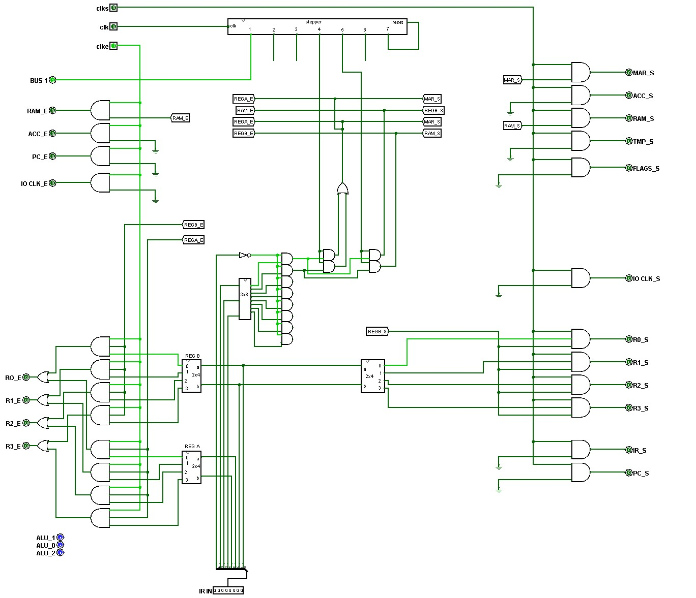
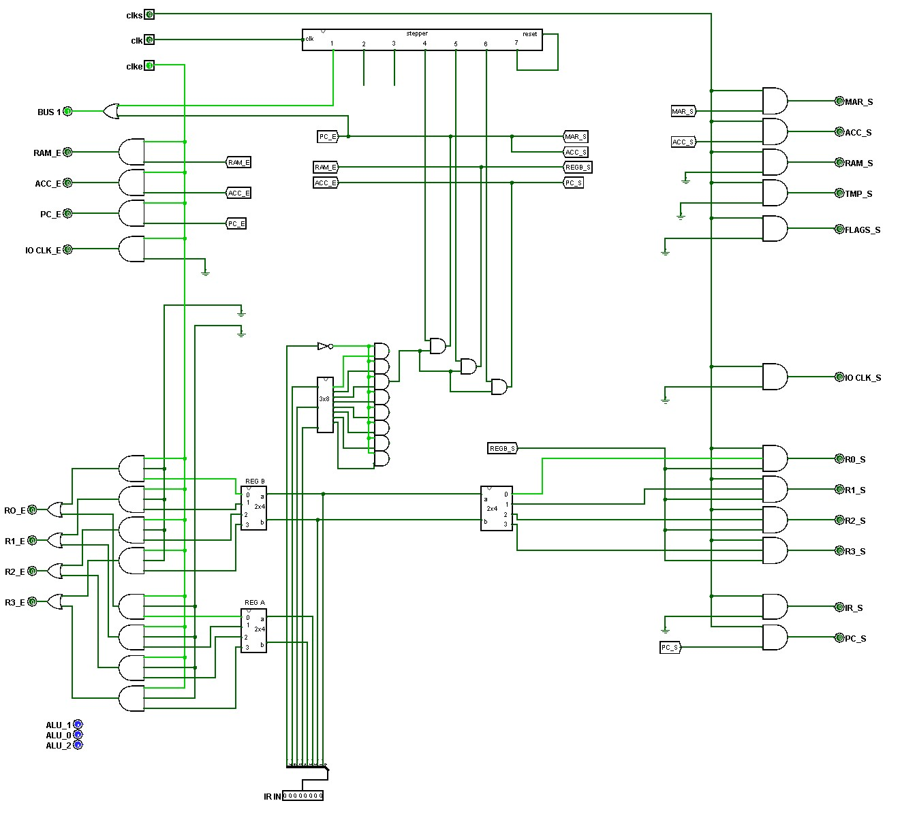

Memory and Immediates
Sections 14.1 – 14.4 | Estimated time: ~45 minutes
14.1 What a C-tier CPU cannot do
What you have. A CPU that fetches every instruction from RAM and executes the ALU class and CLF. In the tiers of your final project, that is tier C.
What you can’t do. Get a number into a register except by hand. Read a variable from memory or write one back. Choose between two paths, or repeat anything. Every program you can run is a straight line, and every value in it was typed in through the test port.
What you can do by the end of the week. Run any program in the course instruction set, loaded from a file, at full speed, until it stops itself. This page adds the three instructions of tier B: LD, ST and DATA. None of them needs a new part on your bus. They are new rows in the control table.
14.2 LD and ST: two transfers each
Week 12 showed you these two on paper; now you wire them. LD RA, RB means RB ← RAM[RA]: the address is in a register, and the value goes into another. ST RA, RB means RAM[RA] ← RB. Both take two transfers after fetch, and step 6 does nothing:
LD R1, R2 — byte 00000110
| Step | Drives the bus | Captures | Note |
|---|
ST R1, R2 — byte 00010110
| Step | Drives the bus | Captures | Note |
|---|
Two things are worth noticing. The MAR is set from a register at step 4, not from the PC — the MAR does not care where an address comes from. And ST needs a line the control unit has never had: ram_s, the RAM’s set, which until now only your hand-loading pin data_ram could raise. The RAM’s input is the bus, so whatever RB puts on it is written.

14.3 DATA: an instruction that carries its value
DATA RB, n puts a constant into a register. The constant cannot fit in the instruction byte — that byte is already 0010 00bb — so it lives in the next byte of RAM. DATA R2, 0x2A is two bytes, 22 2A. The trick is getting the second byte without fetching it as an instruction, and you already own it. After fetch, the PC points at the data byte, so steps 4 to 6 repeat fetch’s own pattern:
DATA R2, n — bytes 00100010, n
| Step | Drives the bus | Captures | Note |
|---|
Step 4 is fetch’s step 1 again: the PC (now pointing at n) goes to the MAR while the ALU makes PC + 1 for ACC. Step 5 puts n into R2. Step 6 is fetch’s step 3: ACC goes back to the PC, which now points past the data byte, at the next instruction. The data byte is never fetched as an instruction because the PC jumps over it.

BUS 1 through the same OR as fetch’s step 1.14.4 The control table grows
Here is your whole control table at the end of this week, with the terms this week adds marked. The jump terms belong to page 2 and c to page 3, but they are listed here so you can build the control unit from one table.
| Line | Gated with | Week 13 terms | Added this week |
|---|---|---|---|
| Loading the table… | |||
Each new class is one output of the DECODER_3TO8 you placed in Week 11 — ANDed with NOT b7, exactly as CLF was. You built all eight class ANDs then and wired one; this week you wire five more. Every new term is still a (step AND class) AND, ORed into a line that already exists, except two new lines: ram_s and c.
For loads and stores on MIPS in a second voice, log into your Saylor CS301 account at the CS301 course page and open Unit 5: Designing a Processor. MIPS adds an offset to the address register; your CPU uses the register as the address itself.
Where you are
You can say what each step of LD, ST and DATA does, and why DATA’s step 6 skips a byte. Next page: instructions that write the PC on purpose.